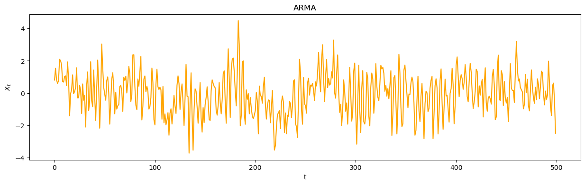

![]()
import numpy as np # Libreria Matematica basica
import pandas as pd # Libreria para manejo, manipulacion y visualizacion de datos
from pandas import read_excel # funcion para leer archivos de excel
import matplotlib as mpl # Libreria para visualizacion de datos y graficas
import matplotlib.pyplot as plt # Funcion para graficar
import seaborn as sns # Libreria para visualizacion de datos
from pandas.plotting import autocorrelation_plot
from statsmodels.tsa.stattools import acf, pacf
from statsmodels.graphics.tsaplots import plot_acf, plot_pacf
from statsmodels.tsa.arima.model import ARIMA
from statsmodels.tsa.seasonal import seasonal_decompose
from statsmodels.tsa.stattools import adfuller
from statsmodels.tsa.arima_process import ArmaProcess
import session_infoTaller - Sesion 3 - Series de Tiempo y Python IIE - UNAM
Abstract
Este Notebook incluye una introduccion al manejo de Series de Tiempo con Python
Keywords
Series de Tiempo, ARIMA, Python, R, Estadistica
df = pd.read_csv('AirPassengers.csv')
df1 = read_excel('ClayBricks.xls')
df2 = read_excel('Electricity.xls')
df3 = read_excel('MilkProduction.xls')
df4 = read_excel('JapaneseCars.xls')
df5 = read_excel('HouseSales.xls')Simulacion de Series de Tiempo
Definimos la funcion para graficar series de Tiempo
def plot_df(df, x, y, title="", xlabel='Fecha', ylabel='Numero de Pasajeros', colores="", dpi=100):
plt.figure(figsize=(15,4), dpi=dpi)
plt.plot(x, y, color=colores)
plt.gca().set(title=title, xlabel=xlabel, ylabel=ylabel)
plt.show()Programa para simular modelos MA(q)
def Simul_TS_MA(Q,T):
print("TS MA de Orden:",len(Q))
t0=np.random.rand(len(Q))
E=list(t0)
X=[]
x=0
for i in range(T):
e=np.random.normal(0,1)
x=e
for j in range(len(Q)):
x=x+Q[j]*E[-j-1]
X.append(x)
E.append(e)
x=0
e=0
return(X)Programa para simular modelos AR(p)
def Simul_TS_AR(P,T):
print("TS AR de Orden:",len(P))
t0=np.random.rand(len(P))
E=np.random.rand(len(P))
X=list(t0)
x=0
for i in range(T):
x=np.random.normal(0,1)
for j in range(len(P)):
x=x+P[j]*X[-j-1]
X.append(x)
x=0
return(X)Programa para simular modelos ARMA(p,q)
def Simul_TS_ARMA(P,Q,T):
print("TS ARMA de Orden: p="+str(len(P))+', q='+str(len(Q)))
t0=np.random.rand(len(P))
E=np.random.rand(len(P))
X=list(t0)
x=0
for i in range(T):
e=np.random.normal(0,1)
x=e
for j in range(len(P)):
x=x+P[j]*X[-j-1]
x=x+Q[j]*E[-j-1]
X.append(x)
x=0
return(X)Simulamos un modelo AR
C=[1/2,-1/2]
T=500
AR3_1=Simul_TS_AR(C,T)
plot_df(AR3_1, range(T+len(C)), AR3_1, title="AR", xlabel='t', ylabel='$X_t$', colores="blue", dpi=100)TS AR de Orden: 2Simulamos un modelo MA(q)
C=[1/2,-1/2,0.3,0.2,0.2,0.3]
MA3_1=Simul_TS_MA(C,T)
plot_df(MA3_1, range(T), MA3_1, title="MA", xlabel='t', ylabel='$X_t$', colores="purple", dpi=100)TS MA de Orden: 6Simulamos un modelo ARMA(p,q)
P=[1/2,-1/2,0.15,0.2,0.2,0.12]
Q=[1/2,-1/2,0.1,0.2,0.2,0.2]
ARMA3_1=Simul_TS_ARMA(P,Q,T)
plot_df(ARMA3_1[len(P):], range(T), ARMA3_1[len(P):], title="ARMA", xlabel='t', ylabel='$X_t$', colores="orange", dpi=100)TS ARMA de Orden: p=6, q=6
Descripcion de modelos mediante ACF y PACF
ACF y PACF del modelo AR
# Graficas
fig, axes = plt.subplots(1,2,figsize=(16,3), dpi= 100)
plot_acf(AR3_1, lags=50, ax=axes[0])
plot_pacf(AR3_1, lags=50, ax=axes[1])
ACF y PACF del modelo MA
# Graficas
fig, axes = plt.subplots(1,2,figsize=(16,3), dpi= 100)
plot_acf(MA3_1, lags=50, ax=axes[0])
plot_pacf(MA3_1, lags=50, ax=axes[1])
ACF y PACF del modelo ARMA
# Graficas
fig, axes = plt.subplots(1,2,figsize=(16,3), dpi= 100)
plot_acf(ARMA3_1, lags=50, ax=axes[0])
plot_pacf(ARMA3_1, lags=50, ax=axes[1])Pruebas de Estacionariedad
adf1 = adfuller(AR3_1)
print(f'p-value: {adf1[1]}')p-value: 0.0adf2 = adfuller(MA3_1)
print(f'p-value: {adf2[1]}')p-value: 0.00016933095079124148adf3 = adfuller(ARMA3_1)
print(f'p-value: {adf3[1]}')p-value: 0.0002259317773816777Estacionariedad de los ejemplos de TS
Data=[df["#Passengers"],df1["Bricks"],df2["Kwh"],df3["Monthly Milk Production per Cow"],df4["Price"],df5["HouseSales"]]
w=0
for k in Data:
w=w+1
adf = adfuller(k)
print("P-value de la serie #"+str(w))
print(f'p-value: {adf[1]}')P-value de la serie #1
p-value: 0.991880243437641
P-value de la serie #2
p-value: 0.236826218261678
P-value de la serie #3
p-value: 0.994097902491198
P-value de la serie #4
p-value: 0.6274267086030311
P-value de la serie #5
p-value: 0.16387564674048022
P-value de la serie #6
p-value: 0.03722371625292226Simulacion con StatsModels
# Simulate AR(1) process
ar_params = [1, -0.7] # AR(1) with phi=0.7
ma_params = [1] # No MA component
ns=500
ar_process = ArmaProcess(ar_params, ma_params)
ar_data = ar_process.generate_sample(nsample=ns)plot_df(ar_data,range(ns),ar_data, title="AR-StatModels", xlabel='t', ylabel='$X_t$', colores="Blue", dpi=100)# Simulate MA(1) process
ar_params = [1] # No AR component
ma_params = [1, 0.5] # MA(1) with theta=0.5
ma_process = ArmaProcess(ar_params, ma_params)
ma_data = ma_process.generate_sample(nsample=ns)plot_df(ma_data,range(ns),ma_data, title="MA-StatModels", xlabel='t', ylabel='$X_t$', colores="purple", dpi=100)# Simulate ARIMA(1,1,1) process
ar_params = [1, -0.5] # AR(1) with phi=0.5
ma_params = [1, 0.4] # MA(1) with theta=0.4
arima_process = ArmaProcess(ar_params, ma_params)
arima_data = np.cumsum(arima_process.generate_sample(nsample=ns)) plot_df(arima_data,range(ns),arima_data, title="ARIMA-StatModels", xlabel='t', ylabel='X_t', colores="purple", dpi=100)Estimacion de Series de Tiempo, Modelos ARIMA
Estimacion modelo AR
estim1 = ARIMA(AR3_1, order=(2, 0, 0))
res1 = estim1.fit()
print(res1.summary()) SARIMAX Results
==============================================================================
Dep. Variable: y No. Observations: 502
Model: ARIMA(2, 0, 0) Log Likelihood -702.386
Date: Mon, 20 Oct 2025 AIC 1412.772
Time: 22:32:05 BIC 1429.646
Sample: 0 HQIC 1419.392
- 502
Covariance Type: opg
==============================================================================
coef std err z P>|z| [0.025 0.975]
------------------------------------------------------------------------------
const 0.0062 0.045 0.138 0.890 -0.082 0.094
ar.L1 0.4700 0.039 11.900 0.000 0.393 0.547
ar.L2 -0.4646 0.043 -10.737 0.000 -0.549 -0.380
sigma2 0.9601 0.062 15.588 0.000 0.839 1.081
===================================================================================
Ljung-Box (L1) (Q): 0.03 Jarque-Bera (JB): 5.54
Prob(Q): 0.87 Prob(JB): 0.06
Heteroskedasticity (H): 1.05 Skew: -0.26
Prob(H) (two-sided): 0.76 Kurtosis: 3.04
===================================================================================
Warnings:
[1] Covariance matrix calculated using the outer product of gradients (complex-step).Estimacion modelo MA
estim2 = ARIMA(MA3_1, order=(0, 0, 2))
res2 = estim2.fit()
print(res2.summary()) SARIMAX Results
==============================================================================
Dep. Variable: y No. Observations: 500
Model: ARIMA(0, 0, 2) Log Likelihood -761.130
Date: Mon, 20 Oct 2025 AIC 1530.260
Time: 22:32:05 BIC 1547.119
Sample: 0 HQIC 1536.876
- 500
Covariance Type: opg
==============================================================================
coef std err z P>|z| [0.025 0.975]
------------------------------------------------------------------------------
const -0.0664 0.060 -1.115 0.265 -0.183 0.050
ma.L1 0.5998 0.194 3.096 0.002 0.220 0.979
ma.L2 -0.3997 0.089 -4.486 0.000 -0.574 -0.225
sigma2 1.2161 0.251 4.853 0.000 0.725 1.707
===================================================================================
Ljung-Box (L1) (Q): 0.39 Jarque-Bera (JB): 1.30
Prob(Q): 0.53 Prob(JB): 0.52
Heteroskedasticity (H): 1.02 Skew: 0.11
Prob(H) (two-sided): 0.91 Kurtosis: 3.10
===================================================================================
Warnings:
[1] Covariance matrix calculated using the outer product of gradients (complex-step).Estimacion modelo ARMA
estim3 = ARIMA(ARMA3_1, order=(2, 0, 2))
res3 = estim3.fit()
print(res3.summary()) SARIMAX Results
==============================================================================
Dep. Variable: y No. Observations: 506
Model: ARIMA(2, 0, 2) Log Likelihood -757.336
Date: Mon, 20 Oct 2025 AIC 1526.672
Time: 22:32:05 BIC 1552.031
Sample: 0 HQIC 1536.618
- 506
Covariance Type: opg
==============================================================================
coef std err z P>|z| [0.025 0.975]
------------------------------------------------------------------------------
const -0.0347 0.151 -0.230 0.818 -0.331 0.261
ar.L1 0.8177 0.110 7.444 0.000 0.602 1.033
ar.L2 0.1256 0.091 1.387 0.165 -0.052 0.303
ma.L1 -0.2651 0.097 -2.744 0.006 -0.454 -0.076
ma.L2 -0.5587 0.064 -8.678 0.000 -0.685 -0.433
sigma2 1.1671 0.075 15.640 0.000 1.021 1.313
===================================================================================
Ljung-Box (L1) (Q): 0.25 Jarque-Bera (JB): 4.76
Prob(Q): 0.62 Prob(JB): 0.09
Heteroskedasticity (H): 0.93 Skew: -0.24
Prob(H) (two-sided): 0.63 Kurtosis: 3.02
===================================================================================
Warnings:
[1] Covariance matrix calculated using the outer product of gradients (complex-step).session_info.show(html=False)-----
matplotlib 3.10.6
numpy 2.3.3
pandas 2.3.3
seaborn 0.13.2
session_info v1.0.1
statsmodels 0.14.5
-----
IPython 9.6.0
jupyter_client 8.6.3
jupyter_core 5.8.1
jupyterlab 4.4.9
notebook 7.4.7
-----
Python 3.13.5 | packaged by conda-forge | (main, Jun 16 2025, 08:27:50) [GCC 13.3.0]
Linux-6.8.0-85-generic-x86_64-with-glibc2.39
-----
Session information updated at 2025-10-20 22:32Reuse
Citation
BibTeX citation:
@online{e._ascencio_g.,
author = {E. Ascencio G., Luis},
title = {Taller - {Sesion} 3 - {Series} de {Tiempo} y {Python} {IIE} -
{UNAM}},
volume = {1},
number = {1},
doi = {000000/00000000},
langid = {en},
abstract = {Este Notebook incluye una introduccion al manejo de Series
de Tiempo con Python}
}
For attribution, please cite this work as:
E. Ascencio G., Luis. n.d. Taller - Sesion 3 - Series de Tiempo y
Python IIE - UNAM. CIMAT. https://doi.org/000000/00000000.